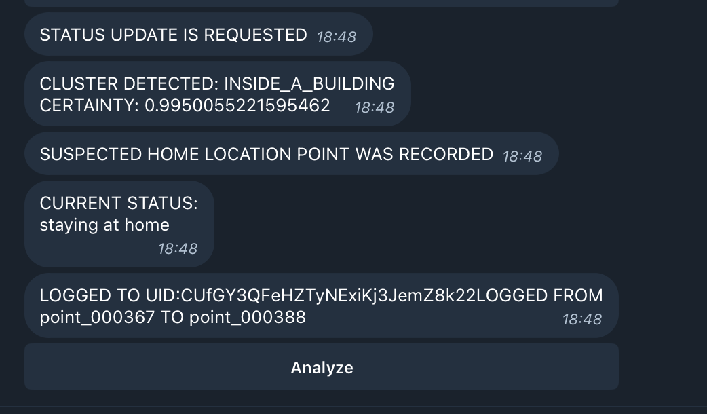

Developer tooling for Orb · 2024
Connected Status Reporter
A Telegram-based debugging tool for inspecting status inference and replaying captured test data.
Why I built it
When Orb inferred an unexpected status, testers needed to understand what the backend had done. I built a reporter to expose those decisions in Telegram and make the relevant data easier to inspect.
- 01Backend processes data
- 02Reporter sends a status or error
- 03Tester inspects logs & map links
- 04Replay inputs to investigate
What it did
- Sent notifications when the backend processed data and inferred a status.
- Allowed testers to enable logging and rerun captured data through the algorithm.
- Linked statuses to OpenStreetMap views for investigation.
- Surfaced server errors and tracebacks through Telegram.

Scope and lessons
A feedback-collection feature was intended to support possible future model training, but it was suspended. No completed AI-training system is claimed for this tool.
The delivered value was observability and replay: making the backend’s decisions easier to inspect and reproduce. This project sits alongside Orb, rather than representing a separate company or product.